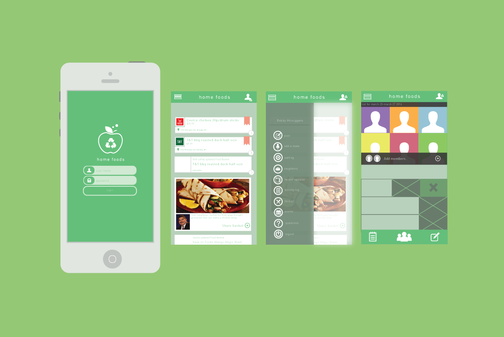

Home Foods
Interface Design, Market Research
The production of food waste in households is consistently a problem in the developed world. Home Foods is a mobile platform that operates as a two sided marketplace for individuals and grocery stores, which attempts to solve this issue. This report goes into greater in depth around the thinking process behind the development of Home Foods and how it is able to adequately reduce and help people manage their food waste.
After thorough investigation through piles of data, our team decided to design the site with a few personas in mind, specifically for those that want to learn more about retrofitting and how it’ll benefit them in the long run.

Before we began, we did extensive research on our potential partners as well as competitors in order to understand the current direction of the market. We wanted to find out where are people buying their groceries and how are they buying them. We looked at potential partners such as Superstore, Save on Foods, t&t, etc.
The Home Foods application was part of a social experimental movement done by the students of Simon Fraser University. Right from the beginning we wanted to get a better sense of how are food being wasted in hope to minimize food scarcity. The challenge was to create something that encourages the users to reuse the application but in doing so, we tried different variations of what should go on the landing page.
In order to solve this issue we had to go back and ask some of the e users we had interviewed, and asked them about what they would use most often, given a range of options.
- -Help young adults minimize cooking task as work can be daunting as well as save more on food consumption.
- -Assists mother and father in deciding what to cook for their children in order to minimize food waste and keep track of the family's consumption on foods.
- -Every single purchase of food will be calculated and showing how much food might be wasted.
We created a series of survey questions in order to find out the ideal target audiences. Through our research, we have identify that Home foods should
For our mid fidelity prototype, we wanted to be able to understand flow better and how a potential user would navigate through the interface. The key factors of the interface allows the user to find what they need at the simplest form of navigation-by swiping.
The over all project allowed our team to further understand the complexity of creating something for the users. We were able to identify the persona with good research, however the difficult part was to identify how they would navigate throw the website. The flow that dictates the user's journey was something we had to revisit time and time again in order to create a better experience for the users.